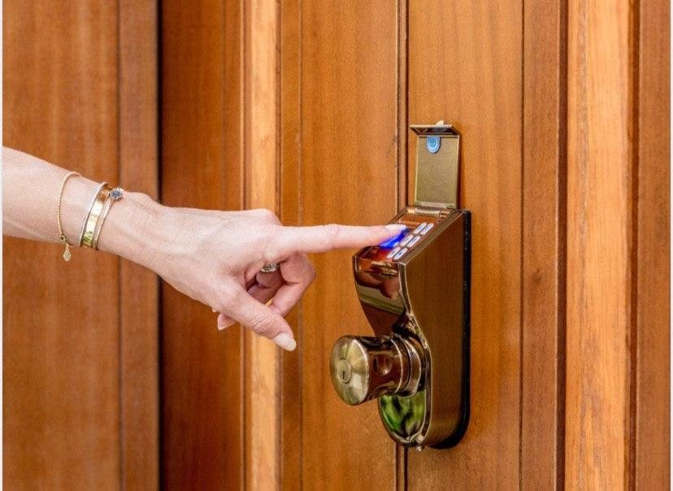
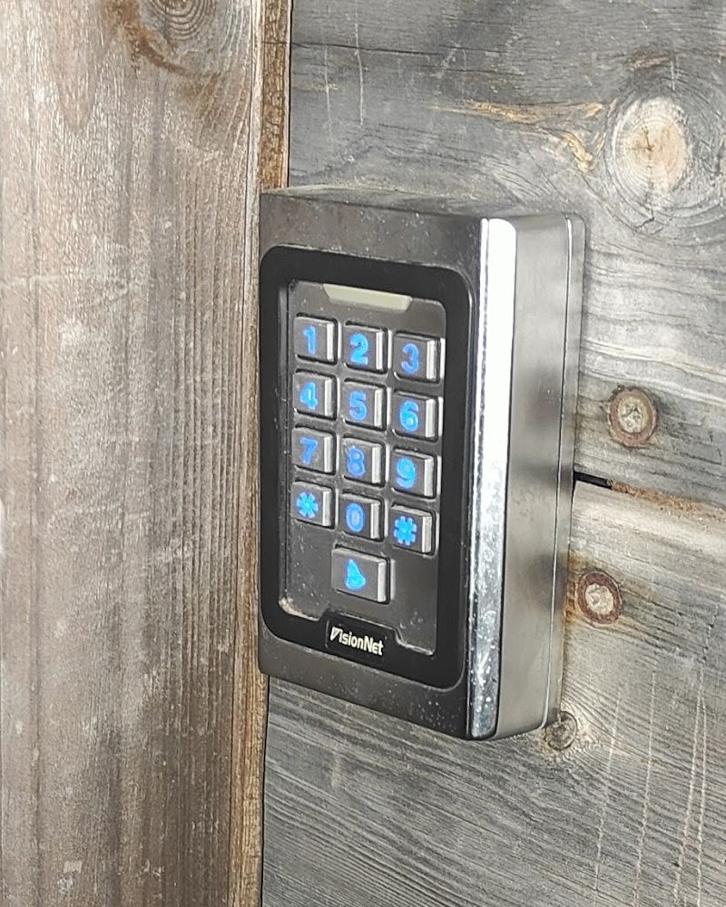
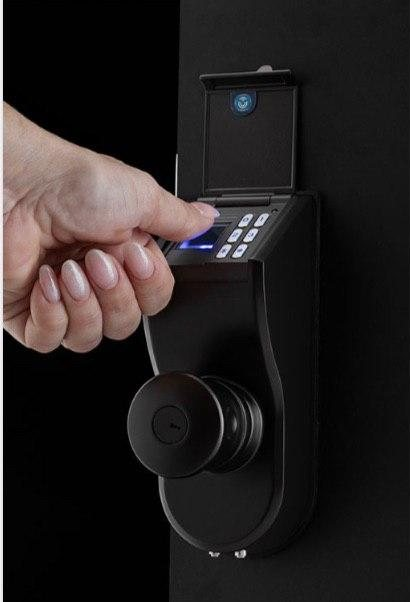
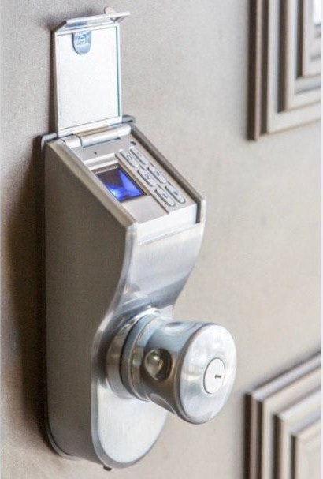
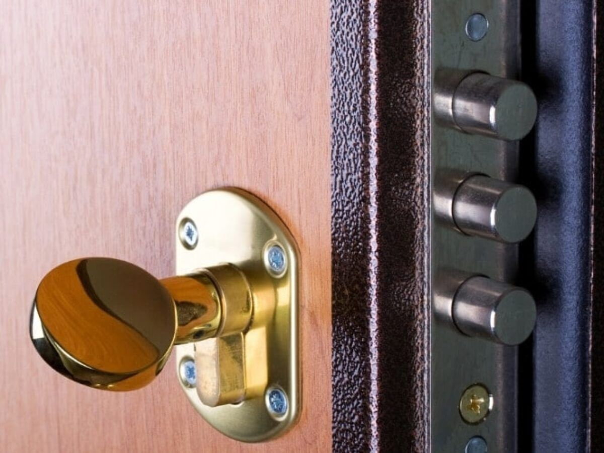
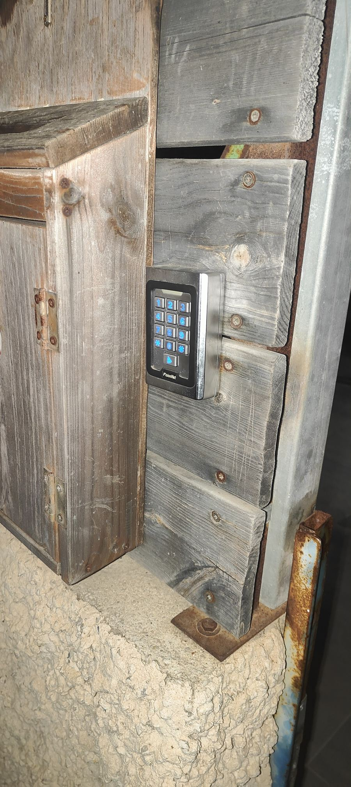

מנעולים חכמיםSmart locks
קוד, טביעת אצבע, צ׳יפ ומפתח, באותו מנעול.Code, fingerprint, chip and key, in one lock.
קונספט לדוגמה שנבנה עבור Techlock Israel מנעולן · זה אינו האתר הרשמי של העסקA sample concept built for Techlock Israel Locksmith · This is not the business’s official website
ניקולאי מתקין ומחליף מנעולים: מנעולים חכמים ומנעולי טביעת אצבע, קודנים לשערים ומנעולים רגילים.Nikolai fits and replaces locks: smart locks, fingerprint locks, keypads for gates and classic locks.





מהדלת של הדירה ועד השער של החצר.From the flat’s front door to the garden gate.
קוד, טביעת אצבע, צ׳יפ ומפתח, באותו מנעול.Code, fingerprint, chip and key, in one lock.
לכניסה, לחצר ולגינה.Entrances, yards and gardens.
מנעול חדש וצילינדר חדש.A new lock, a new cylinder.
מנעולים עם כמה בריחים. תמונה להמחשה.Multi-bolt locks. Illustrative photo.
8:00–20:00
8 ביקורות בגוגל8 Google reviews
מתוך תמונות העסק: קודן מואר על שער עץ ישן.From the business’s photos: a lit keypad on an old wooden gate.
הזיזו את הסמן על התמונהגעו בתמונה כדי להאירMove the pointer over the photoTouch the photo to light it

שירות מצוין ועבד בצורה מקצועית. אני מרוצה מהעבודה שעשה וממליץ בחום!
Excellent service and he worked professionally. I’m pleased with the work he did and warmly recommend him!
תודה רבה ניקולאי.עבודה מקצעוית ויחסי אנוש מעולים! ממליץ בחום
Many thanks, Nikolai. Professional work and great people skills! Warmly recommended
שירות מקצועי ביותר! ממליץ בחום
Highly professional service! Warmly recommended
התקין לי מנעול עם קודן לכניסה של הגינה.עבטדה זריזה ומקצעוית.ממליץ אליו
He installed a keypad lock on my garden entrance. Quick, professional work. I recommend him
לפי גוגל: כל ימות השבוע, גם בשישי ובשבת, 8:00–20:00.Per Google: every day of the week, Friday and Saturday too, 8:00–20:00.
העסק רשום בגוגל בחיפה. על אזור השירות כדאי לשאול את ניקולאי.It is listed on Google in Haifa. Ask Nikolai about the area he covers.
כן. בתמונות העסק יש מנעולים עם קוד, טביעת אצבע, צ׳יפ ומפתח.Yes. The business’s photos show locks with a code, fingerprint, chip and key.
כן, כמו הקודן על שער העץ שבתמונה למעלה.Yes, like the keypad on the wooden gate in the photo above.
חיפה · אין כתובת רחוב ברישום בגוגלHaifa · no street address on the Google listing